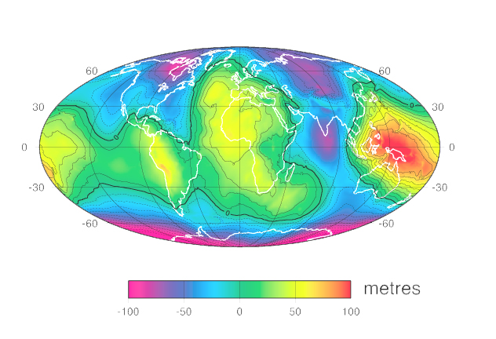

Computational GeoDataScience
Some words of wisdom and enthusiasim here about data science, machine learning and geospatial malarky and why learning to code, especially using python, is the road to data analysis Damascus...
Lessons, Tutorials & FAQs
What hardware/software do I need to be able to do this course?
Lesson 01: Data++ -An introduction to numbers...
Lesson 02: Satellite Data -Where to get it etc ...
Lesson 03: Classification -What to do with data...
Lesson 04: Visualisation -How to look at data...
Lesson 05: Python Coding -The path to enlightenment...
Lesson xx: ...more wonderful stuff...
